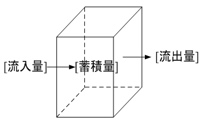
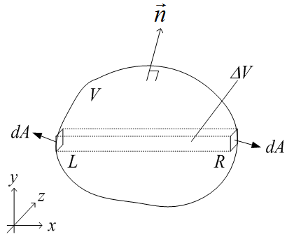

広告
グリーン・ガウスの定理
グリーン・ガウスの定理とは、簡易的に言えば 体積分を面積分に換える定理です。

上図から
領域内の変化量 ＝ 表面からの流入・流出量
であり、
体積分：領域内の変化量
面積分：表面からの流入・流出量
という考えに基づいています。

上図において、微小領域内のx軸方向の収支を考えます。物理量を fとすると
\[
\iiint_{\Delta V}\frac{\partial\phi}{\partial x}\,dx\,dy\,dz
=
\iint(\phi\,dy\,dz)_R-\iint(\phi\,dy\,dz)_L
\]
ここで、法線ベクトルは
\[
\vec n=\vec\delta_x n_x+\vec\delta_y n_y+\vec\delta_z n_z
\]
であり、微小面積は
L面： \(dA=-n_x\,dy\,dz\)
R面： \(dA=+n_x\,dy\,dz\)
であるので、
\[
\begin{aligned}
\iiint_{\Delta V}\frac{\partial\phi}{\partial x}\,dx\,dy\,dz
&=\iint(\phi\,dy\,dz)_R-\iint(\phi\,dy\,dz)_L\\
&=\iint\{\phi(+n_x\,dA)\}_R-\iint\{\phi(-n_x\,dA)\}_L\\
&=\iint(\phi n_x\,dA)_R+\iint(\phi n_x\,dA)_L
\end{aligned}
\]
領域全体を積分すると
\[
\begin{aligned}
\iiint_V\frac{\partial\phi}{\partial x}\,dx\,dy\,dz
&=\iint_R\phi n_x\,dA+\iint_L\phi n_x\,dA\\
&=\oiint_S\phi n_x\,dA
\end{aligned}
\]
同様に
\[
\iiint_V\frac{\partial\phi}{\partial y}\,dV
=
\oiint_S\phi n_y\,dA
\]
\[
\iiint_V\frac{\partial\phi}{\partial z}\,dV
=
\oiint_S\phi n_z\,dA
\]
ベクトル表示すると
\[
\iiint_V\nabla\phi\,dV
=
\oiint_S\phi\vec n\,dA
\]
有限要素法で使用する形式
f = uvの場合、
\[
\iiint_V\frac{\partial(uv)}{\partial x_i}\,dV
=
\oiint_S(uv)n_i\,dA
\]
となるので、
\[
\iiint_Vu\frac{\partial v}{\partial x_i}\,dV
+
\iiint_V\frac{\partial u}{\partial x_i}v\,dV
=
\oiint_Suvn_i\,dA
\]
移項して、
\[
\iiint_Vu\frac{\partial v}{\partial x_i}\,dV
=
\oiint_Suvn_i\,dA
-
\iiint_V\frac{\partial u}{\partial x_i}v\,dV
\]
この形式は、有限要素法で収支式の離散化に使用されます。
| prev | | | up | | | next |